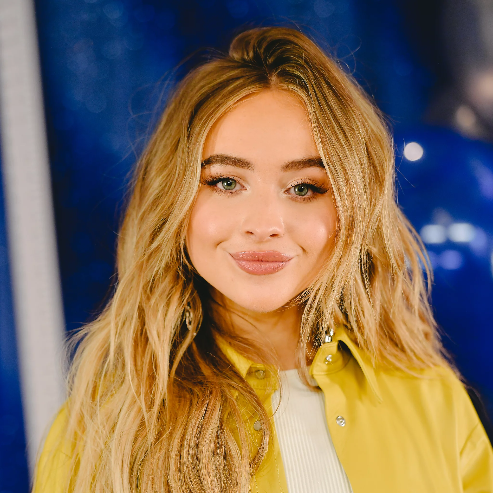
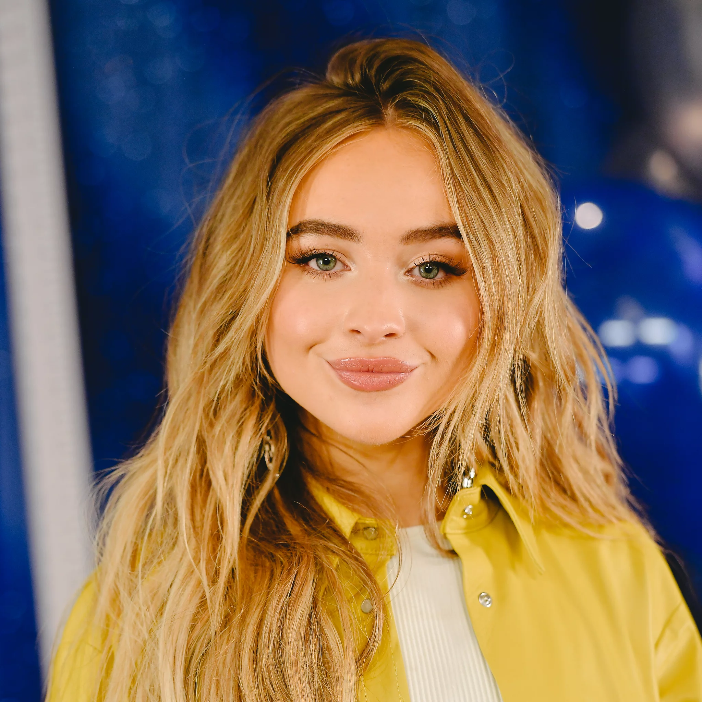

Sabrina Carpenter
 

¿quien es?
sabrina Carpenter es una actriz, cantante y compositora norteamericana, nacida el 11 de mayo de 1999, en Lehigh Valley, Pensilvania. Nieta de Nancy Cartwright, conocida por dar voz a Bart Simpson, Sabrina fue educada en casa y para los 10 años, empezó a subir videos a YouTube donde mostraba su habilidad para el canto. Su padre construyo un estudio para motivar su talento y grabar sus primeras composiciones, que la llevo a ocupar el tercer puesto en el concurso de talentos y canto The Next Miley Cyrus Project. El éxito de su aparición en el show le valió sus primeras participaciones en televisión, además de grabar canciones para proyectos televisivos, antes de presentar su primer álbum de estudio, en 2015, Eyes Wide Open, al que le han seguido tres álbumes más.
Sabrina Ann Lynn Carpenter nació el 11 de mayo de 1999 en Lehigh Valley, Pensilvania. Es la menor de las hijas del matrimonio formado por David y Elisabeth Carpenter. Sus padres decidieron que querían darle una enseñanza diferente a la tradicional; y por eso optaron por educarla ellos mismo desde casa. Aunque a una edad muy temprana, la artista comenzó a desarrollar su pasión por la música; y con tan solo 10 años comenzó a publicar en YouTube videos dedicando al canto.
familia
Además de con sus dos hermanas mayores Sarah y Shannon, la artista se ha criado junto a su medio hermana por parte de padre, Cayla. Pero lo que pocos saben es que Sabrina tiene parentesco con una de las actrices de doblaje más importante del país. Y es que la cantante es sobrina de la actriz Nancy Cartwright, conocida por poner voz a Bart Simpson y a otros personajes de la serie animada.
otros proyectos
En 2022 lanzó su primer fragancia en tamaño de muestra junto a Scent Beauty, llamada 'Sweet Tooth'. En septiembre del mismo año, el perfume estará disponible en tamaños más grandes. A principios de 2022, Carpenter lanza su nuevo single «Fast Times» siendo la primera canción de Carpenter en ser catalogada como "explicita". En mayo de 2022 asiste a su primera MET Gala siendo vestida por el diseñador Paco Rabanne. A finales de ese mismo mes, estrena en Amazon Prime Video el largometraje «Emergency» interpretando a Maddie. El 15 de julio de 2022, y luego de tres años, saldrá al mercado su quinto álbum de estudio emails i can't send incluyendo los singles anteriores y uno nuevo «Vicious» El 17 de marzo lanzó la versión deluxe de su quinto álbum de estudio llamado email I can't send: fwd incluyendo 4 nuevas canciones: «opposite», «Feather», «Lonesome», «thigs i wish you said». El 24 de Marzo lanzó el remix de la canción «Nonsense» junto a Coi Leray . Posteriormente apareció en el video de la canción «That's not how this works» de Charlie Puth y Dan + Shay , luego el 14 de abril lanzó su versión junto a ella bajo la frase Sabrina's Version